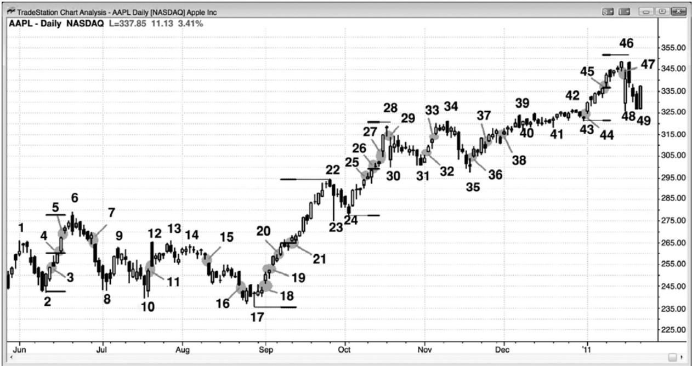
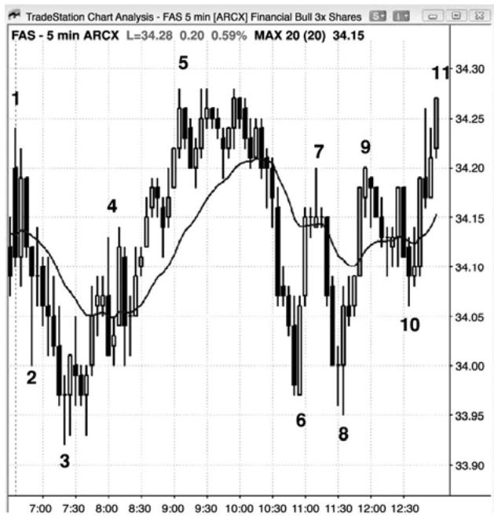
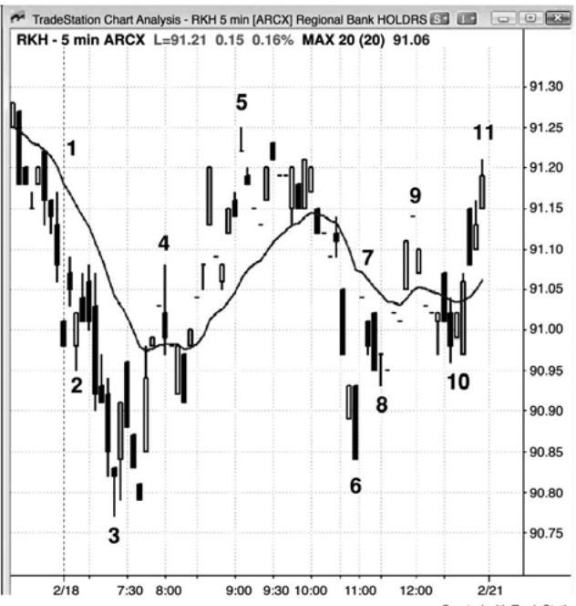
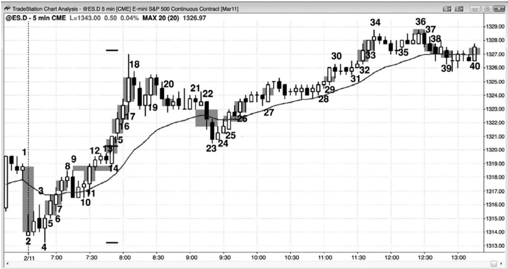
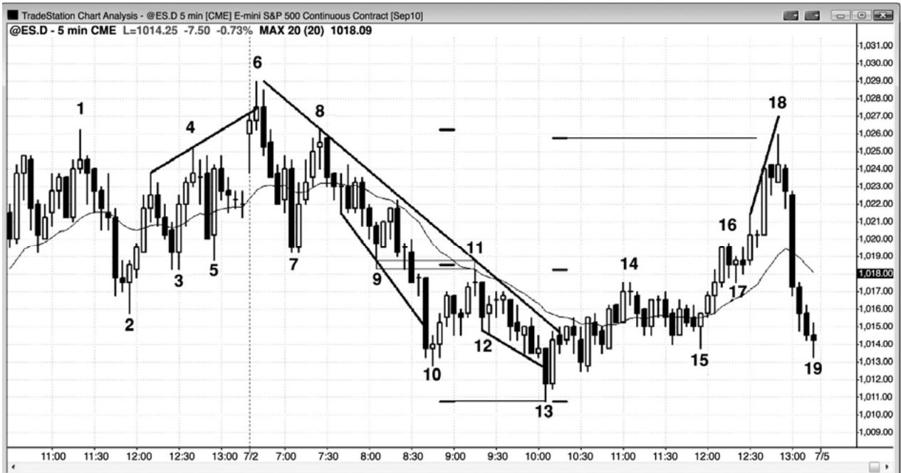
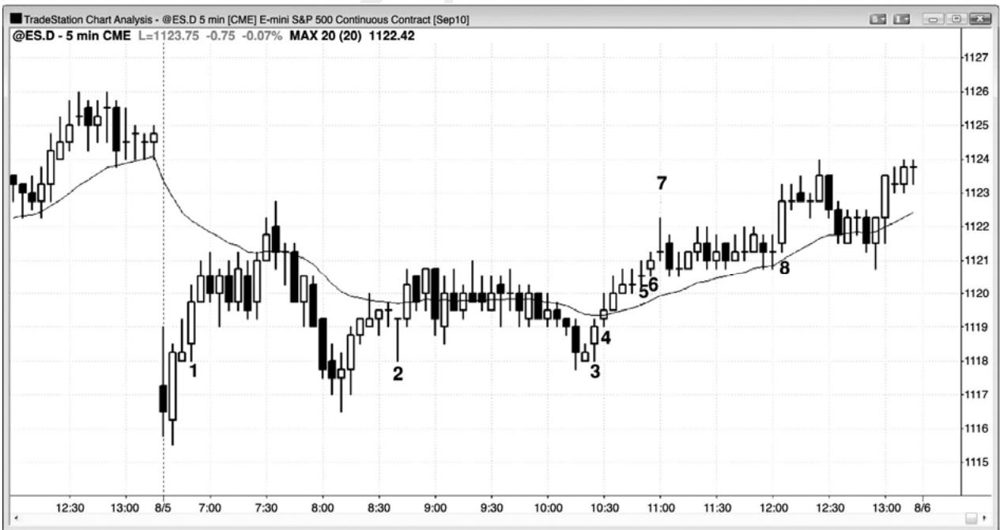
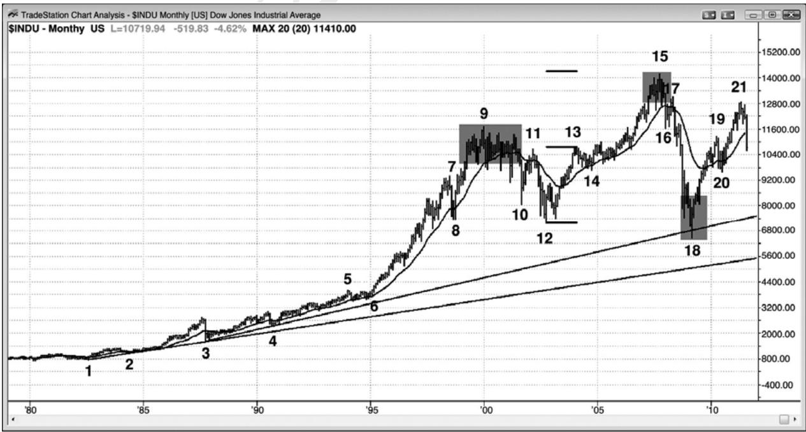
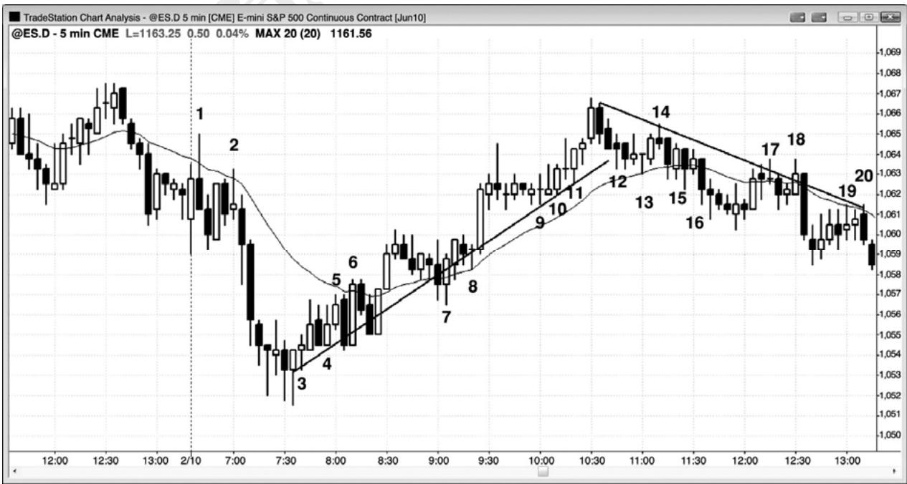

第6章 缺口¶
第 6 章 缺口
简言之，缺口就是两个价位之间的空隙。在日线图、周线图和月线图上，传统缺口很容易识别。举例说明，如果市场处于多头趋势中，今天的低点高于昨天的高点，那么今天就是向上跳空。这些传统缺口因形成的位置不同而有着不同的名称，在趋势起点的被称为脱离缺口或突破缺口，在趋势中间的被称为测量缺口，在趋势终点的被称为耗尽缺口。在其他时间形成的缺口，比如在趋势的尖峰期内，或者在交易区间内形成的缺口，被简单地称为缺口。通常，在看到市场接下来的走势之前，交易者们是无法说出是哪种缺口的。举例说明，在日线图上，如果市场向上突破了交易区间的顶部，突破棒是一条大型多头走势棒，低点位于前一棒高点上方，那么交易者们就把这个缺口看作是力量的征兆，认识它是一个潜在的突破缺口。如果新的多头趋势继续行进几十棒，那么他们会返回头观察那个缺口，确定地称它为突破缺口。相反地，如果在几棒之内向下反转，进入一轮空头趋势，那么他们就把它称为耗尽缺口。
如果多头趋势行进了5棒或10棒左右，两次出现缺口，那么交易者们会认为这第二个缺口可能成为多头趋势的中点。他们会把它看作一个可能的测量缺口，一旦市场完成一波向上的测量运动，很多交易者就会准备获利了结他们的多头头寸。那波测量运动是基于从多头趋势的底部到缺口中点的高度，把这一高度加到缺口中点上。这种类型的缺口通常出现在趋势的尖峰期，它带给交易者们的是在市价或小幅回撤入场的自信，因为他们认为市场将向一个测量运动目标前进。
多头趋势行进几十棒后，到达一个阻力区，开始显示出可能反转的征兆，交易者们将关注下一个向上的缺口，如果出现的话。如果一个向上的缺口形成，那么他们会把它看作一个可能的耗尽缺口。在继续大幅上涨之前，如果市场回落至缺口前一棒高点之下，那么交易者们将把这看作是弱势的征兆，认为那个缺口可能代表着耗尽，它是一种买进高潮。他们常常不会再次买进，直到市场已经调整了至少 10 棒和两条腿。有时，耗尽缺口形成于趋势反转之前，因此，每当出现一个可能的耗尽缺口时，交易者们会观察整个价格行为，看交易者方程是否偏向于做空头交易。如果出现反转，那么产生反转的趋势棒就是一个突破缺口（一条棒线的作用也类似于一个缺口），可能是反向趋势的起点。
因为所有趋势棒都是缺口，所以交易者们可以看到，传统缺口的日内等价形态在日线图上是如此常见。如果出现一轮多头趋势，已经到达阻力区，很可能向下反转（反转将在第三本书中讨论），但是出现一个最后的突破，那么那条多头趋势棒可能成为一个耗尽缺口。有时，那一棒是一条非常大型的的多头趋势棒，收盘靠近其高点，有时，最后的突破会由两条非常大型的多头趋势棒构成。这是一种潜在的买进高潮，它提醒精明的交易者们卖出。多头卖出攫取利润，因为他们认为市场很可能下跌，形成几条下跌腿，大约持续 10 棒，可能允许他们在低得多的价位再次买进。他们也注意到耗尽型买进高潮和趋势反转的可能，不希望冒险让自己的利润转变为亏损。积极的空头也注意到这一点，他们会卖空新建空头头寸。如果在接下来的几棒内形成一条很强的空头趋势棒，而且总在场内方向翻转为下跌，那么那条最后的多头趋势棒成为一个得到确认的耗尽缺口，空头趋势棒就成为一个突破缺口。多头趋势棒之后跟着一条空头趋势棒，是一个高潮反转，是一个双棒反转。如果两条趋势棒之间有一棒或多棒，那么那些棒线就形成一个岛形顶（island top）。那个岛形顶的底部就是空头突破缺口的顶部，像所有缺口一样，可能会被测试。如果它被测试，然后市场再次向下反转，那么突破测试便形成一个更低的高点。如果初次向下反转很强，多空双方都将在市场测试岛形顶和市场再次向下反转时卖出，因为双方都更加自信地认为市场将会下跌 10 多棒。多头卖出，锁定利润，或者最小化损失，如果他们是在那条多头趋势突破棒正在形成时在较高价位买进的话。安头卖出，建立新的空头头寸。一旦市场持续下跌很多棒，那么获利了结者们（空头买回他们的空头头寸）就会介入，制造一个回撤或交易区间。如果市场再次形成一条空头趋势棒，向下突破交易区间，那么那一棒可能是一个测量缺口，交易者们会尝试继续持有部分空头头寸，直到市场到达那一目标。
随着市场向下反转，交易者们会注意观察空头棒的强弱。如果出现一两条大型空头趋势棒，收盘靠近其低点，那么交易者们就假定总在场内方向可能正在向空头翻转。他们会观察下几棒，看是否会形成一条高点 1 买进信号棒。如果形成一条高点 1 买进信号棒，而且它较弱（相对于抛盘），比如形成一个小型多头十字星或一条空头棒，那么更多交易者将会准备在它的高点上方做空，而不是买进。记住，在刚刚的多头趋势中，这是一个高点 1 回撤，但是现在交易者们正寻找大约 10 棒的横盘至下跌，所以更多人会准备在高点 1 买进信号棒上方做空，而不是买进。如果他们的判断正确，那么那个高点 1 买进信号将会失败，形成一个更低的高点。如果向下反转很强，那么交易者们还会在更低高点下方和高点 1 买进信号棒下方做空。如果市场在横盘至下跌调整后，形成一个高点 2 买进架构，那么有些空头假定它也会失败，把限价单设在它的高点或高点上方做空。别的空头会利用止损单在高点 2 买进信号棒下方做空，因为在高点 2 买进的多头将会把他们的保护性止损设在那一区域。一旦这些多头被止损踢出，至少在几棒之内他们很可能不准备再次买进，多头的缺度加上空头的介入，可能引起一个空头突破。如果空头突破较弱，那么多方可能有能力制造一个楔形多头旗形（一个高点3买进架构）。如果突破很强，那么下跌很可能至少持续几条小型腿，到达一个测量运动目标，测量基准是交易区间（多头高点至高点 2 多头信号棒的底部）的高度。然后，突破棒成为一个测量缺口。如果多方成功地令市场在高点 3（一个楔形多头旗形）向上反转，那么空头测量缺口将会被回补，成为一个耗尽缺口。
P76
这一过程在每张图表上一天会发生很多次，交易者们总是在问自己，突破更可能会成功（使突破棒成为一个测量缺口），还是更可能会失败（使形成突破的趋势棒变为耗尽缺口）。名称并不重要，但含义非常重要。这是交易者们所要做的最重要的一项决定，每当它们考虑交易时，他们就要做出这样的决定：前一棒的上方和下方是有更多的买家还是卖家？每当他们认为存在失衡时，他们就拥有了一个优势。在那个多头突破的例子中，当最后出现一条失败突破架构的信号棒时，交易者们就要决定，在那一棒下方会有更多的买家还是卖家。如果他们认为突破很强，那么他们就假定那里有更多的买家，于是他们会在那一棒下方买进。别的交易者则会等待，看下一棒是否只下跌了几个跳动。如果那样的话，那么他们就设定止损单在它上方买进，他们会考虑它将成为一个突破回撤买进架构。然后，那个缺口很可能成为一个测量缺口。空方会把那条失败突破架构的信号棒看作一个很强的卖出信号，他们会在它的低点下方做空。如果他们是对的，那么市场将会下跌，补上那个多头缺口（使它变为一个耗尽缺口），很快跌破那条多头突破棒的低点，他们希望市场将继续大幅下跌。
有时，我们会听到这样一句话：“所有缺口都会被回补”，但是这句话对于交易者们来说几乎没什么帮助。市场总是会转回头测试先前的价位，所以更准确地说，那句话应该是“先前所有价位都将被测试”。但是，因为有足够多的交易者关注缺口，所以它们就像是磁石，尤其是当回撤向它们靠近时。市场距某个磁力位越接，磁场就越强，市场就越可能到达那个磁力位（这是买进真空和卖出真空的基础）。举例说明，如果多头趋势中出现一个向上的缺口，那么一旦最后出现调整或反转，市场跌至缺口前一棒的高点下方（即回被缺口）的几率，就比跌至上涨过程中其他任意棒线高点下方的几率略高一点。但是，由于缺口是磁力位，所以当市场向它们靠近时，交易者们可以寻找交易机会，就像市场靠近任意磁力位时他们应该做的一样。
一棒低点高于前一棒高点，或者一棒高点低于前一棒低点的缺口，在高流动性商品的日内图表上是很少见的，但是一天的第一棒除外，因为第一棒常常形成缺口。但是，如果使用比较宽泛的定义，那么 5 分钟图上每天都再现很多其他类型的缺口，在理解市场正在做什么和设定交易方面，它们可能非常有帮助。有时，5 分钟图上会有一棒的开盘价高于前一棒的收盘价，这常常是力量的微妙暗示。举例说明，如果连续的多头趋势棒中出现两三个这样的缺口，那么多方很可能非常强。所有这些缺口，在日线图、周线图和月线图上也具有同样重要的意义。
因为缺口是价格行为的重要元素，所以日内交易者应该使用缺口的宽泛定义，把趋势棒看作日内缺口，因为它们的作用是一样的。如果成交量足够低，那么每当出现一系列趋势棒时，将会在每张日内图表上形成实际缺口。记住，所有趋势棒都是尖峰、突破和高潮，突破是缺口的一个变种。当电子迷你一天的第一棒出现一个大型上涨缺口时，将会在标普 500 现金指数上形成一条大型多头趋势棒。那是一个缺口和趋势棒代表相同行为的实例。当趋势起点出现一条大型趋势棒时，它便制造一个突破缺口。举例说明，如果市场正在从一个低点向上反转，或者从一个交易区间突破而出，那么趋势棒前面一棒的高点，与趋势棒后面一棒的低点，便形成一个突破缺口。你也可以简单地把整个趋势棒实体看作缺口，有些交易者可能把近期其他的波段高点作为缺口的底部。常常不只一种选择，但那并不重要。重要的是出现突破，也就是说出现了缺口，尽管在图上没有看到传统的缺口。市场常常会跌破趋势棒前一棒高点一两个跳动，但是，只要回撤没有跌破趋势棒的低点，交易者们就仍然认为突破是有效的。总之，如果市场跌破趋势棒前面一棒高点的幅度超过几个跳动，那么交易者们就会对突破失去信心，即便没有反转，也不大可能形成太多的坚持到底。
每当在一个潜在的多头突破中出现一条趋势棒时，一定要看一下它前一棒的高点和后一棒的低点。如果它们没有重叠，那么两个价位之间的空隙可能就是一个测量缺口。如果趋势继续上涨，那么就准备在测量运动的目标（根据多头腿低点到缺口中点的高度）获利了结。有时，缺口的底部是几棒之前形成的一个波段高点，或者是尖峰期内的一个高点，但是位于趋势棒之前几棒。缺口的低点可能是一个波段低点，形成于突破棒之后很多棒。正在从空头腿形中突破而出的空头趋势棒，也具有同样的特征。一定要寻找潜在的测量缺口，最明显的一个是空头趋势棒前面一棒的低点和空头趋势棒后面一棒的高点之间的缺口。
P77
如果多头趋势在行进了 5 到 10棒或更多棒后，又出现一条多头趋势棒，那么它可能就是一个普通缺口、一个测量缺口、或一个耗尽缺口。在交易者们看到下几棒之前，他们不知道是什么缺口。如果又出现一条很强的多头趋势棒，那么是测量缺口的几率就比较高，多方将继续买进，预期上涨继续，大约形成一波测量运动，基准是缺口的中点。
另一种常见缺口是棒线高点或低点与均线之间的缺口。在趋势中，这些缺口可以形成很好的波段交易，市场会测试趋势的极点，在交易区间中，它们常常形成朝向均线的刮头皮交易。举例说明，如果出现一轮强空头趋势，市场最后反弹至均线上方，那么在那波反弹中，低点高于均线的第一棒就是一条第一均线缺口棒。交易者们会在那一棒低点下方 1 个跳动处设定卖出止损单做空，预期市场会测试空头趋势低点。如果止损单未被触发，那么他们会不断把止损向上移动至刚刚收盘的棒线下方 1 个跳动，直到他们的空单被执行。有时，当市场上涨至信号棒上方时，他们会被止损踢出，在那种情况下，他们会在前一棒低点下方再次尝试重新入场他们的空头。一旦入场，那条信号棒就成了第二均线缺口棒做空信号。
均线缺口一天会出现多次，每天如此，大部分时间他们出现在没有强趋势的情况下。如果交易者们善于选择，那么这些缺口棒可以形成朝向均线的逆势交易架构。举例说明，假设当天是一个交易区间日，市场已经在均线上方行进了一小时左右。然后，市场跌至均线下方，但紧接着形成一条强多头反转棒，其高点位于均线下方，如果那一棒高点与均线之间有足够的空隙做一笔多头刮头皮交易，那么交易者们常常会在那一棒上方做多。
所有时间框架上的突破——包括日内和日线图上的突破，常常形成与传统缺口不同的突破缺口和测量缺口。突破点和突破后第一次暂停或回撤之间的空隙是一个缺口，如果它是出现在一轮可能的强趋势的早期，那么它就是一个突破缺口，是力量的征兆。虽然它会引起一波从那条腿的起点开始的测量运动，但是目标通常太近，以至于无法获利，所以他们应该忽略那个测量运动目标。相反地，他们应该仅把那个缺口看作力量的征兆，而不是用来制定获利了结目标的工具。举例说明，如果电子迷你的平均每日区间一直是 12 点左右，而开盘后一小时左右的区间只有 3 点，那么突破形成的缺口将引出一个目标，形成一个只有 6 点的区间。如果趋势刚刚开始，那么区间更可能达到平均值12点左右，而不仅仅是6点，因此，交易者们不应在测量运动目标获利了结。
当从腿形起点到突破缺口（脱离缺口）之间的距离约为平均每日区间的三分之一到一半时，它的中点常常引出一波测量运动，在那个测量运动目标，交易者们可能获利了结，甚至是反转头寸。举例说明，如果市场处于交易区间内，然后市场形成一条大型多头趋势棒，向上突破了交易区间，那么区间顶部的波段高点便是突破点。如果市场在下一棒横向运动或上涨，那么那一棒的低点就被认为是突破测试的第一个价格；它的低点和突破点之间的中点，常常成为那条多头腿的中点，那个缺口成为一个测量缺口。 如果区间大约为近日平均每日区间的三分之一到一半，那么就把那条腿的底部作为测量运动的起点；测量那个低点与测量缺口中点之间的跳动数，然后在那个中点上方向上投影相同的跳动数。然后留意观察市场在接近测量运动目标时的行为。如果突破后几棒内市场回撤到缺口内，但马上反弹，那么利用那个回撤低点作为突破测试，测量缺口就是那个低点和突破点之间的空隙。这是一种力量的征兆。一旦市场上涨至测量运动目标，很多交易者就会将部分或全部多头头寸获利了结。如果上涨运动较弱，那么有些交易者甚至会设定限价单在测量运动目标做空，不过只有非常熟练
的交易者才可考虑那样做。
艾略特波浪交易者把这些缺口中的大部分看作是由小幅波浪 4 回撤形成的，回撤一直未跌破浪 1 高点，预期接下来形成浪 5。基于艾略特波浪理论的成交量，并不足以使这成为价格行为的一个重要组成部分， 但是，每当回撤未能跌破突破点时，所有交易者都把这看作力量的征兆，预期市场将测试趋势高点。回撤是一个突破测试。
如果回撤小幅跌破突破点，那么这就是缺乏力量的征兆。你仍然可以使用那个低点和突破点之间的中点，尽管回撤已经低点突破点。在那种情况下，我把这种类型的缺口称为负缺口（negative gap），因为在数学上它们的差是个负数。举例说明，对于多头突破，如果你从那条突破测试棒的低点，减去突破点的高点，那么结果便是一个负数。利用负测量缺口得出的投影不太可靠，但是仍然可以非常准确，所以值得关注。顺便提一句，台阶形态在每个新突破之后都会出现负缺口。
小型测量缺口也可以在任意趋势棒前后形成。如果趋势棒的前面一棒和后面一棒没有重叠（像任意缺口一样），那些就产生了微型测量缺口，就可能引起一波测量运动。如果那条趋势棒刚好形成突破，那么测量运动通常会更准确。举例说明，在趋势棒正突破进入强多头腿形的任意多头腿形中，观察一下其中的任意一条强多头趋势棒。如果它后面一棒的低点位于或高于它前面一棒的高点，那么两者之间的空隙便是一个缺口，而且可能是一个测量缺口。从腿形起点测量至缺口中点，然后向上投影，看一下如果那个缺口位于腿形中点的话，市场必须上涨的幅度。这是多头可能获利了结的区域。如果那里还有其他做空的原因，那么空头也会在那里做空。当这些微型缺口出现在趋势的头几棒时，市场的延伸幅度通常会大大超出根据缺口得出的测量运动目标。不要使用这种缺口去寻找获利了结区，因为市场很可能走得更远，我们不希望在很棒的波段中过早离场。但是，在趋势的早期阶段，这些缺口仍然是很重要的，因为它们在趋势力量方面，带给趋势交易者们更多的自信。
P78
突破每天都出现很多次，但是大部分突破失败，市场反转。然而，当它们成功时，它们能够提供几倍于风险的潜在回报，而且具有不错的成功率。一旦交易者学会了如何判断突破是否可能会成功，那么就应该考虑这些交易。在关于测量运动的第 8 章，还给出一些测量缺口的示例。
使用这种对缺口的宽泛定义，允许交易者们发现很多交易机会。任意图表上的任意三条连续的趋势棒，便会形成一种非常常见的缺口。举例说明，如果这三棒呈上涨趋势，而且棒3 低点位于或高于棒 1 高点，那么就形成一个缺口，它可能成为一个测量缺口或突破缺口。
棒 1 高点是突破点，它被棒 3 低点测试，成为一个突破测试。在较小的时间框架图表上，你可以看到棒 1 顶部的波段高点和棒 3 底部的波段低点。很容易忽视这种架构，但是如果你仔细观察图表你会发现，这些缺口常常在接下来的若干棒内被测试，但是却没有被回补，所以便成为买家势强的证据。
一种相关的缺口出现在市场已经趋势运动了很多棒，但现在出现一条异常大型的趋势棒之后。举例说明，如果市场在过去的几个小时一直上涨，但是现在突然形成一条非常大的多头趋势棒，收盘于最高价附近，特别地，如果这一棒的高点或下几棒中有一棒的高点向上冲破了一条趋势通道线，那么便产生了一个或多个带有一个或多个突破点和突破测试的重要缺口。特殊情况下，这一棒会成为一轮新的、甚至更为陡峭的多头趋势的起点，但是比较常见的情况是，它代表着一轮过度的、耗尽的多头趋势中的一个买进高潮，几棒之内便会出现横盘至下跌调整，大约持续 10 棒左右，甚至可能变成趋势反转。老手们会等待这些棒线，他们的等待令卖家在市场中缺席，产生一个买进真空，吸引市场快速上涨。一旦他们看到那样的一棒，多头便获利了结，空头便开始做空，位置是在那一棒收盘、那一棒上方、下一两棒收盘（前提是它们较弱），或者在那些棒下方使用止损单入场。观察一下买进高潮棒前面的棒线。第一个要考虑的缺口，是它后面一棒的低点与前面一棒的高点之间的那个。如果市场继续上涨数棒，然后回撤，然后再次反弹，那么突破测试现在就是那个回撤的低点。如果市场跌破买进高潮棒之前的那一棒的高点，那么缺口就已被回补。如果市场继续下跌，形成一条大型下跌腿，那么那个缺口就成为一个耗尽缺口。
同时观察一下多头突破之前的那些棒线，看有没有其他可能的突破点。那些突破点通常是波段高点，可能有若干个需要考虑。举例说明，几棒之前可能有一个小型波段高点，但是在几小时之前，可能有另外几个更高的波段高点。如果突破棒向上强势突破那些点，那么它们都可能是突破点，可能引起一波向上的测量运动，你可能必须考虑从每个缺口开始的向上投影。如果某个投影目标恰好位于某个阻力位，比如趋势通道线、更高时间框架的空头趋势线、或者基于其他计算（比如交易区间的高度）的其他测量运动目标，那么获利了结者将会在那一价位进入，同时也会出现一些做空者。其中有些空头将会做刮头皮交易，但是其他空头会建立波段交易，而且会在高位加仓。
人们普遍认为，大部分缺口都会被回补，至少突破点会被测试，这是正确的。每当某个事情很可能发生时，便出现一个交易机会。当出现一个空头尖峰和通道时，市场常常会向通道顶部（即缺口底部）回调，试图形成一个双重顶，然后再向下测试。当出现一条买进高潮棒，向上突破一个重要波段高点时，通常会形成回撤，测试那个波段高点，于是交易者们应该寻找可能引起测试的做空架构。然而，不可操之过急，一定要确保交易架构的合理性，而且有其他证据表明回撤很可能马上发生。这可能是一个横向的多头旗形，突破并运动了几棒，然后出现一条强反转棒，使那个多头旗形转变为一个可能的最终旗形。最终旗形之后通常是至少包含两条腿的调整，测试旗形底部；市场通常会形成一波向下的测量运动，幅度为从旗形顶部到底部的高度，有时会引起趋势反转。上述全部内容，对于空头突破也是正确的。
除了形成于趋势起点的突破缺口和形成于趋势中部的测量缺口之外，还有形成于趋势正试图反转时的耗尽缺口。当一轮趋势的晚期出现一个缺口，然后市场反转回补那个缺口，那个缺口变成一个耗尽缺口，像所有耗尽征兆一样（将在第三本书中关于反转的部分讨论），接下来通常是一段交易区间，但是有时也会引起反转。这些对于使用日线图的交易交易者来说更加重要，但是日内交易者在缺口开盘时看到它们一直会引起开盘反转。日内交易者认为它们是失败的缺口开盘，但是它们是一种耗尽缺口。在日线图上，如果一个耗尽缺口之后跟着一个反方向的突破缺口，而且在那一棒收盘后，那个缺口仍未被回补，那么这便形成一个岛形反转形态。举例说明，如果市场处于多头趋势中，然后出现一个向上的缺口，下一棒、甚至十几棒后，出现一个向下的缺口，那么两个缺口之间的那些棒线，便被认为是岛形顶。图18.4（在第 18 章中）给出一个日线图上出现的岛形底的实例。
P79
每当出现一条通道，然后出现一条趋势棒，收盘超出前一棒极点，那么交易者们就应该留意是否形成了一个缺口。举例说明，如果有一条多头通道或一个空头旗形，下一棒收盘比前一棒高点高出几个跳动，那么这条突破棒可能成为一个测量缺口。留意下一棒低点，看它是否一直高过前一棒高点。如果那样，那么那条突破棒可能是一个测量缺口。如果缺口被回补，那么那条趋势棒可能是一个耗尽缺口，多头尖峰可能引起向下反转。
突破缺口在第一本书中关于开盘起趋势的第 23 章和第三本书中关于缺口开盘的一章有更细致地讨论。
图 6.1 日线图上各种各样的缺口

日线图上的传统缺口可被划分为突破缺口（脱离缺口）、测量缺口、耗尽缺口和普通缺口。多数情况下，缺口的分类并不重要，刚开始看起来是一种类型的缺口，后来可能是另一种缺口。举例说明，图 6.1 中，AAPL 日线图上的缺口 5 本来可能是一个测量缺口，但最终却成为一个耗尽缺口。另外，当市场处于强趋势中时，常常会形成一系列缺口，任何一个缺口都可有可能成为测量缺口。交易者们需要警惕每一种可能性。举例说明，缺口 4、21、25、26、27 和 45 都可能是测量缺口。缺口 4 是一个测量缺口，棒 6 高点几乎是一波完美的测量运动。腿形底部棒 2 至缺口中点的跳动数，与缺口中点至棒 6 顶部的跳动数，差不多相同。在棒 6顶部，获利了结者和新的强势空头进入。在略低于以缺口 26 和 45 为依据的目标处，获利了结者进入。
突破缺口常常会翻转总在场内方向，因此是力量的一种重要征兆。大部分交易者会把如下缺口划分为突破缺口：缺口 3、7、11、15、18、29、32、36、44 和 47。当出现突破和缺口时，把缺口看作力量的征兆，而不是生成测量运动目标的工具。当一轮趋势刚刚开始时，过早获利了结是错误的。不要把合理的突破缺口用作测量缺口。
截止棒 22 的反弹向上突破了棒 6 高点，截止棒 23 和 24 的回撤是突破测试。棒 24 低点（市场再次向上反转）与棒6高点之间的空隙便是一个突破缺口。这里，因为棒24低点低于棒 6 高点，所以这个突破缺口是负的。因为它是从一个大型交易区间突破而出，所以它也很可能成为一个测量缺口。
有些老手可能会逆突破操作，在棒 22 下方做空，寻找对突破点的测试和快速的刮头皮式下跌。多方正在寻找相同的东西，当回撤测试进入缺口时，准备以市价或使用限价单积极买进。在截止棒22的上涨运动中，多方在突破时初次买进，他们迫切希望在相同价位再次买进，以使得新的多头趋势恢复，并且至少形成某种向上的测量运动（比如可能基于从棒22高点至棒23低点的回撤的高度）。
当一轮趋势已经行进一段时间后，交易者们将开始寻找更深的回撤。常常出现在回调之前的缺口是耗尽缺口，比如缺口 5、16、27、33 和 45。
当缺口出现时是作为一个尖峰序列的一部分，或者出现在交易区间内时，通常不把它分类，大部分交易者只是把它看作一个缺口，比如缺口19、20、37和38。


通常，仅在成交量极低的情况下，才能在 5 分钟图上看到传统缺口。图 6.2 所示为两只相关的交易所交易基金（ETF）。今天，左侧的FAS成交1600万股，右侧的RKH仅成交98,000股。RKH图表上的所有缺口，在FAS图表上都是趋势棒，同时，FAS图表上的很多大型趋势棒，都是RKH图表上的缺口，表明趋势棒是缺口的一个变种。

日内图表拥有自己独特的缺口。每条趋势棒都是一个尖峰、一个突破和一个高潮，而且由于每个突破都是一个变种的缺口，所以每条趋势棒都是一种缺口。在大部分的 5 分钟图表上，开盘缺口是比较常见的。图 6.3 中，棒 2 位于昨天最后一棒的低点下方，形成一个开盘缺口。
在棒 5，市场向上反转，在反转时，它很可能成为一轮多头趋势的起点，给出一个很强的底部。由于它是一轮多头趋势的起点，所以它是一个突破缺口。有的交易者把它的实体看作缺口，而有的交易者认为棒 4 高点和棒 6 低点之间的空隙才是那个缺口。
棒 6 和棒 7 也是趋势棒，所以也是缺口。在趋势行进过程中常常会形成缺口，它们是趋势力量的征兆。
棒 11 是对从棒 9 到棒 10 的多头旗形的突破，同时向上突破开盘区间。由于开盘区间大约为平均每日区间的一半，所以交易者们预期区间会加倍，那使得棒11很可能成为一个测量缺口和一个突破缺口。
市场在棒 12 和棒 13 之间犹豫了三棒，刚好是在昨天进入收盘的高点区域。有些交易者把这一区域看作今天开盘区间的顶部。棒 13 是一条空头反转棒，由于市场可能跌至它的下方，所以空头把它看作失败突破（对棒 9 高点和昨天收盘高点的突破）的信号棒。由于突破非常强劲，所以有多得多的交易者认为那个失败突破卖出信号不会成功，于是在它的低点和低点下方设定限价单买进。那些激进的多头有能力使市场在棒 14 迅速向上反转。于是，棒 14 低点形成测量缺口的顶部，棒9高点是缺口的底部。由于棒14是一条外包棒，所以它是一个突破回撤买进入场，当市场上涨超越前一棒（棒 13）高点时，买单被触发。那轮多头趋势远远超越了测量运动目标。假如空方成功令市场向下反转，那么棒 11 将会成为一个耗尽缺口，而不是一个测量缺口。只要回撤跌至棒 9 高点下方的幅度大约不超过 1 个跳动，交易者们就仍然把那个缺口看作测量缺口，他们会考虑在测量运动目标处部分获利了结（市场上涨得如此迅猛，以至于很多人没有在那一目标离场）。如果市场进一步下跌，那么交易者们就不再信任基于棒11缺口的任何向上的测量运动，而是寻找其他方式来计算测量运动目标。那时，无论把棒 11 称为测量缺口还是耗尽缺口，都毫无意义了，交易者们不再用那些术语考虑它。只要抛盘没有跌破棒 10 高点，多方就会认为那个突破是成功的。如果它跌破棒 10 高点，或者棒10 低点，交易者们就会认为市场是处于交易区间内，甚至可能是处于空头趋势内，如果抛盘强劲的话。棒 14 是对棒 11 缺口的一次突破测试。它错过了棒 9 突破点 1 个跳动，而后向上反转。未让市场跌破棒 9 高点或棒 12 低点，多方正显示出自己的实力。
P81
市场在棒 15 再次突破，那就意味着棒 15 是一个突破缺口，是一个可能的测量缺口。有些交易者会使用开盘区间的高度来预测测量运动（棒 4 低点至棒 13 高点），别的交易者会使用棒 13 突破点和棒 15 回撤之间的缺口中点。
棒 15 和 16 也是多头趋势中的缺口，所以也是力量的征兆。
棒17是已经行进了10棒或20棒的一轮趋势中的一条特别大的多头趋势棒，所以它的作用很可能像是一条耗尽型的趋势棒，可能是一个耗尽缺口。买进高潮有时会引起反转，但更多的时候只是引起回调，持续大约 10 棒，常常包含两条腿。
棒19是又一个潜在的突破缺口，因为它向上突破了一个小型多头旗形。但是它出现在一个买进高潮之后，所以更有可能出现回调。
棒 20 是空头突破缺口处的一次（译注：作者没有注明是什么尝试）尝试，但是它的实体太小；那一棒没有向下突破正在形成中的交易区间的底部（棒 19 前一棒的低点）。
棒 22 是一个突破缺口，空方希望它会引出一波向下的测量运动（因此成为一个测量缺口）。它有着很长的空头实体，向下突破了一个五棒岩架（ledge）和交易区间的顶部。但是，在强劲的空头趋势中，它只是均线测试的一部分，可能是由卖出真空引起的，强势多头和空头只是在等待略低的价位。多头正在等着买进以建立新的多头头寸，空头正等着对自己的空头头寸获利了结。
棒 23 延长了那个突破，但是没有坚持到底，像所有反转尝试一样，多头趋势中的大多数反转尝试和大多数空头突破尝试一样，它失败了。在相信市场已经翻转进入总在场内状态前，大部分交易者希望看到一条以上的空头趋势棒。这是一种很常见的情形，这就是为什么激进的多头会在像棒23这样的棒线收盘买进，预期空头不能令市场翻转为空头状态。这使得那些多头可以在回调的最底部入场。
棒 24 是一条多头均线缺口棒，是从棒 17 买进高潮开始的两条下跌腿结束的信号棒。尽管棒22可以被认为是一个耗尽缺口，但是由于它位于一轮小型空头趋势的终点，所以大部分交易者仍然认为市场处于总在场内多头状态，趋势仍然向上，于是没有明显的空头趋势可供耗尽。这是多头趋势中的一个回撤，不是一轮新的空头趋势。所以棒 22 只是一个失败的突破。
棒 25 是又一个突破，因为市场正在从多头趋势的一个回撤处向上反转，所以正在向上突破一个多头旗形（棒 23 之后的多头内包棒是多头旗形入场的信号棒）。棒 25 是截止棒 23 的空头下跌尖峰之后的一个可能的空头旗形。一旦棒 25 的收盘价远高于棒 24 高点，空头将不再预期接下来会形成第二条下跌腿。那个收盘增加了棒 25 成为测量缺口的可能性，市场经过一棒暂停后在棒 26 再次使市场向上反转，使它成为一个真正的测量缺口。那一波反转大大超出了测量运动目标，棒 25 成为一个突破缺口。
有的交易者仍然怀疑一条空头通道是否正在形成，但是当棒26向上超越它前面的那条空头趋势棒和棒 22 顶部时（空头突破缺口），大部分交易者便不再看空。
棒 27、29、32 和 40 也都是多头突破缺口。
棒 36 是一个突破缺口，但是下一棒向下反转。于是，有些交易者把棒 36 看作一个耗尽缺口和上涨的可能的终点，同时又可能是交易区间或更大回调的起点。
棒 37、38 和 39 是空头缺口，是空方力量（卖压）的征兆。

P82
在图 6.4 中，5 分钟电子迷你图表上显示出一些缺口。唯一的一个传统缺口出现在开盘时，今天第一棒的低点与昨天最后一棒的高点形成一个向上的缺口。但是，由于第一棒没有超越昨天的高点，所以日线图上没有缺口。
市场趋势下跌至棒 13，然后反弹至均线上方，突破空头趋势线。注意棒 14 低点如何位于均线上方，它是几个小时以来第一条这样的棒线。这是一个均线缺口，这些缺口常常令市场去测试空头低点，然后形成两条上涨腿，尤其是当缺口棒前的上涨运动向上突破空头趋势线时，比如在这里。这里，它在棒 15 引出一个更高低点趋势反转，然后是截止棒 18 的第二条上涨腿。
棒 6 向上突破了棒 1 和棒 4 的高点，棒 1 和棒 4 高点成为突破点。那些高点和棒 6 低点之间的空隙便是一个缺口，它在棒 6 的后一棒被回补。日内交易者把这看作一个向上的简单缺口和一个开盘向下反转，但它是某种形式的耗尽缺口。
棒10前面的那条空头趋势棒开盘靠近其高点，收盘靠近其低点，而且拥有一个相对较大的区间。由于它是在市场已经趋势下跌了很多棒后形成的，所以它是一个卖出高潮，由于在回撤（常常包括两条腿）前没有人再愿意卖出，所以卖压已经消耗殆尽。那条突破棒向下突破很多波段低点（棒 2、3、5、7 和 9），棒 11 成为突破测试。棒 10 高点和均线之间也存在很大的空隙，那个缺口被一波两条腿运动回补，那波运动形成一个低点2做空架构。
棒 9 突破点和棒 10 突破测试之间的缺口的中点，引出一波向下的测量运动，其高度等于通道顶部棒 8 至棒 9 之间的竖直距离。棒 10 低点下方右面一棒处的短横线，是从上面两条短横线向下得到的。这个缺口成为一个测量缺口。趋势通道线过冲之后，市场常常会向上反转，但是，这里市场却不升反降，向下突破，底部刚好位于测量运动目标。由于事先我们永远不知道哪个测量运动目标可能有效，所以最好把能够看到的全部画出，然后在任一目标处寻找反转。它们是了结空头头寸的合理价位。如果存在其他建立多头的理由，如果是出现在测量运动目标处，那么形成可获利反转交易的几率就增加。然而，举例说明，市场向下突破趋势通道线和当天先前的一个低点，然后在准确的测量运动目标向上反转。
虽然截止棒 11 的上涨接近棒 7 和棒 9 突破点，但是那个缺口并未被回补。那是空方势强的征兆，接下来形成一个新的低点。
棒回补了棒 10 低点下方的缺口。
棒 14 是对棒 7 和棒 9 双重底的一个二次突破测试，那个双重底是突破点。但是，市场没有下跌，而是横盘运动至棒 15，形成一个楔形多头旗形。这引起一波反弹，同时缺口被回补，对棒 7 和棒 9 的向下突破失败。市场当天努力形成一个反转日，趋势型交易区间日有时会形成反转日，但是当天晚些时候，多头趋势未能保住对市场的控制权。
棒 17 是一个突破回撤，它测试的是突破点棒 14 高点，引起一波很强的反弹，在以棒 13底部至棒 11 顶部为基准的测量运动目标上方两个跳动处停止。标注测量运动的短横线刚好位于棒13右侧，把底部短横线到中部短横线之间的距离向上投影，便得到顶部短横线。
棒 18 是大型均线缺口的又一个实例，那个缺口在几棒内被回补。
P83
还有很多其他的微型缺口，比如棒 6 低点和棒 8 高点之间的缺口。虽然那个高点与棒 6低点处于相同价位，但那是一个缺口，那是对棒 6 向下突破的突破测试。类似地，棒 15 反转棒高点是后面第二棒突破测试棒的突破点。
注意，具有最大实体的三棒：棒 7、棒 10 前一棒和棒 18 前面第二棒，都引起了反转。记住，大多数突破不会走得太远，而且通常会反转，至少是进入回撤。当大型趋势棒出现在趋势已经行进了一段时间之后时，它通常代表着放弃或耗尽。举例说明，棒 18 前面第二棒，即那条大型多头趋势棒，处于一条非常强劲的多头腿形之内。空头绝望地离场，担心市场可能不会上涨多少就出现回撤，让他们在更低的价位离场。其他持平的交易者则处于恐慌之中，担心自己错过收盘前的一轮大趋势，于是他们在市价买进，同时担心回撤不会到来。这种紧张的买压是由充满紧迫感的交易者们引起的，他们买进之后，剩下的交易者中愿意买进的就只有那些希望在回撤买进的了。由于没有人再在这些高位买进，所以市场只能横盘或下跌。
图中有若干微型测量缺口。举例说明，棒 6 后面的那条空头趋势棒形成一个，棒 10 后面的那条多头趋势棒形成一个，棒 15 后面的那条多头趋势棒也形成一个。（相关的）所有运动都超越了测量运动目标。
棒 6 后一棒的低点和棒 7 前一棒的高点，形成一个微型测量缺口，棒 7 低点是准确的下跌测量运动目标。中间的趋势棒突破至当日新低，是一条强空头趋势棒，收盘于低点。
棒 15 后一棒突破了一个小型楔形多头旗形。它后面一棒的低点测试棒 15 高点，即突破点。测试非常精确，只要突破测试低点跌破突破点的幅度不超过 1 个跳动左右，测试就是力量的征兆。如果突破测试跌幅过大，那么它就是突破不强的征兆，突破更可能失败。突破点和突破测试之间的空隙是一个微型缺口。由于它是一个突破缺口，所以仅应把它用作突破强弱的指示，而不是测量运动的基准。初始突破通常引起较大幅度的运动，交易者不应过早地准备获利了结。微型缺口常常是负缺口，也就是说突破测试棒低点比突破棒低点低一两个跳动。突破棒刚刚收盘，激进型的交易者就会在前一棒高点上方 1 个跳动处设定限价单买进，所冒风险大约只有 3 个跳动。成功率可能只有 40%左右，但回报可能是风险的若干倍，所以交易者方程是非常乐观的。

如果一棒开盘价高于或低于前一棒收盘价，那么就形成一个缺口。有时，它可能完全是由低成交量引起的（比如出现多个十字星时），但有时它可能预示着力量很强。图 6.5 中，8个缺口中有 7 个是看涨的；只有棒 2 处的缺口是向下的。当在相同的方向上出现两个或更多连续缺口，而且棒线都拥有趋势实体时，那就是力量的征兆。在那 7 个多头缺口中，大量交易者在棒线收盘设定市价单，那些订单在报价被执行，表明市场必须上涨，以便找到足够的卖家来执行那些订单。如果卖家只愿意在更高的价位卖出，同时多头愿意在报价买进，那么市价很可能会上涨，至少在短时间内上涨。
棒 1 前一棒的高点与后一棒的低点之间形成一个微型测量缺口。截止太平洋标准时间上午 7:35 分形成的波段高点的上涨运动，是从当天第二棒开盘开始的一波精确的测量运动。测量运动常常从尖峰的第一条趋势棒的开盘开始。如果市场向上超过那个目标，那么就使用尖峰的底部，看市场是否在那个目标开始调整。
P84
向下的缺口在第二棒向上反转，所以它是一个耗尽缺口。而日内交易者只会把它看作一个失败的下跌缺口开盘和一个开盘向上反转。
第二部分 磁力位：支撑和阻力
磁力位有两种：支撑磁力位和阻力磁力位。当磁力位低于市价时，它是一个支撑位，也就是说它是多头建仓、空头获利了结的区域。当磁力位高于市价时，它是一个阻力位，也就是说它是多头获利了结、空头建仓的区域。支撑和阻力都具有磁力，会吸引市场朝它们运动。当你注意到某个磁力位距当前价位不太远时，仅在磁力方向上交易，直到市场到达那里。在那一点，你不得不决定市场看起来是要反转、横盘还是忽略磁力位而继续做趋势运动。磁力位告诉你可能的目标，但不是路径，沿途可能出现较大幅度的回撤。另外，市场可能是在持续几十棒的交易区间内，但是距离磁力位却越来越近。虽然你应该注意磁力位，但是当市场决定是否测试磁力位和怎样到达磁力位时，仍然可能存在可靠的双向交易。
交易者们一直在观察支撑位和阻力位。市场拥有惯性，倾向于继续做一直在做地事情。当它做趋势运动时，大部分令趋势反转的尝试都会失败。举例说明，如果市场呈下降趋势，那么大部分支撑位都无法阻挡市场或令市场反转。然而，所有多头反转都发生在支撑位（所有空头反转都发生在阻力位），所以，如果市场开始向上反转，那么潜在的回撤常常比风险大若干倍。尽管成功率常常只有 40%，但交易者方程仍然是正的，所以反转交易具有很棒的数学基础。惯性也意味着当市场处于交易区间内时，大部分突破尝试会失败，市场会再三从区间底部形成的支撑区向上反转，从区间顶部形成的阻力区向下反转。虽然大部分令趋势反转的尝试都会失败，但是所有趋势反转和所有回撤都是从支撑位和阻力位处开始的，所以，知道它们在哪里，能够引导交易者们在最理想的位置获利了结和进入反转交易。
大部分电子迷你交易都是由计算机完成的，它们的算法是基于逻辑和数字。它们可能会在下跌市场中买进，或者在上涨市场中卖出，是因为它们通过计算，认为特定价位是合理的交易价位。如果足够多的算法使用相似的价位，那么市场就可能反转，至少持续一两棒，常常足以做一笔可获利的交易。虽然有些算法使用的数据不是直接来自电子迷你的价格图表（比如它们可能使用基于期权市场或其他相关市场的数据），但是，除非大量程序碰巧使用相似的数据，否则不大可能有足够的力量来改变市场的方向。当市场反转时，它总是在支撑位或阻力位处反转的；通过练习，私人交易者通常能够捕捉到那些价位。因此这些反转中的某一些会引起可获利的交易，而且因为这些价位是获利了结的敏感区，所以知道可能的反转点在哪里，是很有帮助的。
寻找磁力位的重要原因之一是，它们是部分或全部获利的逻辑区。你在获利了结一笔交易时，应该比寻找反向入场要迅速。也就是说，反向建仓比获利了结需要更强的架构。如果市场向磁力位的运动很弱，如果它与较大趋势的方向相反，那么你也可以准备反向建仓，预期出现反转。市场通常会在磁力位出现过冲，至少是小幅过冲，如果向磁力位的运动不是很强的趋势，那么市场通常会反转，至少持续一两棒。如果趋势恢复，经过磁力位后又出现大幅运动，然后二次反转，那么这通常是反向交易的更可靠的架构，尤其是出现强反转棒时。
任何一种重要类型的价格行为都可形成支撑或阻力，常见的有：
趋势线。
趋势通道线。
任意时间框架上任意类型的均线。
测量运动目标。
先前的波段高点或低点。
多头入场棒低点和空头入场棒高点。
多头信号棒高点和空头信号棒低点。
昨天的最高价、最低价、开盘价和收盘价。
任意棒线的最高价、最低价、开盘价或收盘价，特别当那一棒是一条大型趋势棒时。
日线图上的轴点。
斐波那契折返位和投影。
任意类型的交易带。
P86
支撑和阻力是交易者们发明的术语，用于描述那些具有足够的数学优势，可以设定一笔可能获利的交易的任意价位。交易者们发明这些术语的目的是帮助他们捕捉交易。在每一个时间框架上，每一条棒线的高点都代表着一个阻力位，每一条棒线的低点都代表着一个支撑位；收盘价之所以被确定在某一位置，而不是高出 1 个跳动或低出 1 个跳动，是因为计算机因为某种原因把它定在那个位置。支撑和阻力可能不明显，但是，因为计算机控制着一切，而且它们使用着某种逻辑，所以一切都不得不是合理的，即使常常难以理解。图表上的每个价位都拥有一些数学优势，但是除了高频交易（HFT）程序外，那些优势都因太小而无法用来交易，而很多高频交易程序被设计成刮取一便士的利润。根据定义，只有当某个价位的方向概率失衡时，它才会成为支撑位或阻力位。举例说明，如果市场跌至某个支撑位，那么交易者们就认为大约有 60%、甚至更高的可能性，至少会出现一波足以做刮头皮交易的反弹，刮头皮交易是每位交易者的最小交易。如果可能性只有 52%或 53%，那么交易者们或许认为那一概率没有高到使用支撑这一术语，相反地，他们认为那个价位只是一个普通价位。如果市场处于交易区间的中部，那么从广义上讲，前一棒的低点至少是一个最低限度的支撑区，但那并不意味着预期出现的反弹足以设定一笔可能获利的交易。如果预期的反弹只有几个跳动，那么从交易者的角度来看，它不是一个支撑。如果当前一棒正在形成，它正位于自己的低点，而且比前一棒低点高出 1 个跳动，那么市场可能有 53%的可能性在下跌两个跳动前反弹两个跳动。然而，那个胜率太小了，称不上一个优势，同时价格运动幅度太小，交易者无法设定交易（不过高频程序可能会做那笔交易），所以交易者不会把它称为支撑。反过来对于阻力位也是正确的。
之所以存在支撑和阻力，是因为市场具有记忆。市场一旦返回先前的某个价位，它的行为倾向于与上次在那里时的行为相同。举例说明，如果市场跌穿交易区间的底部，然后上涨回到区间的底部，那么它通常会再次下跌，因为它上次在那一价位是下跌的。（之前）未能退出多头头寸，持有头寸经历下跌腿的那些交易者们，会渴望得到二次小亏离场的机会，他们会继续持有，直到市场向上反弹并测试之前的突破。在那一点，他们会把自己的多头头寸全部卖出，这将增加卖压。另外，在下跌腿底部获利了结的空头，会渴望在反弹时再次做空。空头的卖空加上多头的平仓，将为进一步反弹制造阻力，通常会驱动市场再次下跌。
当市场跌回某个价位，多次击中它，而且每次都反弹时，它就是在那个价位找到了支撑。如果市场上涨至某个价位时一直回落，那么那个区域便形成阻力。任意支撑位或阻力位都是磁力位，会吸引市场向那个价位运动。当市场靠近时，它就进入磁场，它靠得越近，磁性拉力就越强。这增加了市场触及那一价位的几率。那种越来越强的磁性磁力，部分是由真空效应产生的。举例说明，如果市场出现一波空头反弹，向一条空头趋势线运动，但是还未击中趋势线，那么卖家常常会闪在一边，等待市场测试趋势线。如果他们认为市场即将测试那条线，那么没有理由在略低于那条线时卖出，因为不久就可以在更高的价位卖出。卖压的缺乏产生一种买进失衡，也就是一种真空效应，快速吸引市场上涨。结果常常产生一条多头趋势棒。然后，多头刮头皮者们平掉自己的多头而获利，空头卖出以建立新的空头头寸。由于低点处没有明确的多头反转，所以大部分多头的买进都是做刮头皮交易，预期只是出现一个回撤，然后空头趋势便会恢复。
市场一旦到达那个目标，交易者们便认为市场现在更有可能下跌，下跌幅度足以做一笔可获利的交易，于是他们突然冒出来积极做空，驱动市场下跌。在那条强多头趋势棒顶部买进的弱势多头，因为没有看到坚持到底而震惊，他们误解了那条多头趋势棒的重要意义。他们认为交易者突然被说服，市场正向上突破那条趋势线，将要形成一条上涨腿。他们没有注意到此前的真空效应，没有考虑到空头正等待市场小幅上涨。那条强多头趋势棒是由空头暂时观望引起的，而不是空头买回他们的空头头寸引起的。不断买进的多头需要找到愿意站在交易另一方的空头，他们只能在更高的价位找到那样的空头，而空头认为在更高的价位市场将开始反转。市场将继续向某个中性区下跌，通常会超出多头现在拥有数学优势的那个点。这是因为市场永远不知道自己是否已经运动得足够远，直到它运动得太远。然后，市场在中性区上方起伏，随着多空双方能够更好地限定中性区，中性区便变得越来越窄。在某个点处，双方认为当前价值是错误的，市场便再次突破，开始寻找新的价值。
每个逆势尖峰都应被认为是一个真空效应回撤。举例说明，如果 5 分钟图上出现一个迅猛的空头尖峰，然后市场突然反转进入一条多头腿，那么低点处便存在一个支撑区，无论你事先是否能够看出。多头闪在一旁，直到市场到达某个价位，在那个价位，他们认为具有价值，在那个很棒的价位买进的机会是短暂的。他们积极入场买进。聪明的空头注意到那个磁力位，他们把它用作获利了结空头头寸的机会。结果市场在 5 分钟图上形成一个底部。像所有底部一样，那个底部出现在某个更高时间框架上的支撑位，比如多头趋势线、均线、或者大型多头旗形底部的空头趋势通道线。需要牢记的是，如果 5 分钟图上的反转很强，那么你应该根据那个反转买进，而不管是否在日线图或 60 分钟图上看到支撑。另外，即便你在更高时间框架上看到支撑，也不要在那个低点买进，除非 5 分钟图上有证据表明市场正在在形成一个底部。也就是说，你无需观察大量不同的图表来寻找那个支撑位，因为 5 分钟图上的反转告诉你它就在那里。如果你能够跟踪多重时间框架，那么你会在市场到达支撑位和阻力位前看到它们，这可以提醒你在市场到达那个磁力位时寻找 5 分钟图上的架构。但是，只要你仔细地跟踪5分钟图，那么它就会告诉你所需知道的一切。
P87
总的来说，如果市场测试某个支撑区 4 到 5 次，那么突破那个支撑区的可能性就增加，在某个点处，突破变得比不突破更可能发生。如果在这一价位拉升市场的买家反复失败，那么他们会在某个点处放弃，从而被卖家战胜。举例说明，如果市场在一条水平的均线上方休整，那么交易者们会在市场每次触及均线时买进，预期出现反弹。相反地，如果市场继续横盘运动，他们甚至没有机会做一笔可获利的刮头皮交易，那么在某个点处，他们会卖掉自己的多头头寸，从而产生卖压。他们还会停止在市场触及均线时买进。这种买压的缺乏增加了市场跌穿均线的几率。多头已然决定，均线处的打折幅度不足以让他们积极买进，他们只会在折扣更多的价位买进。跌穿均线后，如果市场在 10 至 20 棒内没有找到那些买家，那么它通常会趋势下降或继续在交易区间内运动，但现在是在均线下方了。交易者们将开始在向均线的反弹中做空，那就增加了市场开始形成更低高点的可能性，均线将开始趋势下降。市场一旦跌穿支撑位，那个支撑位通常会变为阻力位；而市场一旦向上突破阻力位，那个阻力位通常会变为支撑位。
对于趋势线或趋势通道线也是这样。举例说明，如果多头市场回撤至趋势线 4 次或更多次，而且它在那条趋势线上方的涨幅并不算大，那么在某个点处，多头将停止在趋势线被测试时买进，他们将开始卖出自己的多头头寸，从而产生卖压。这便增加了空头的卖压，同时，由于多头已经停止买进，所以市场将跌穿那条趋势线。然而，市场有时会突然向上加速，空头停止在每一波反弹做空，相反地，他们买回自己的空头头寸，驱动市场进一步上涨。
机构交易是由随意交易员和计算机完成的，而且计算机程序交易已经变得越来越重要。机构交易的依据是基本面或技术面信息，或者是二者的组合，而且两种类型的交易都是由交易员和计算机完成的。总之，大部分随意交易者的决策主要是基于基本面信息，而大部分计算机交易都是基于技术数据。由于现在的大部分成交量都是由 HFT 公司产生的，而且大部分交易都是基于价格行为和其他技术面数据，所以大部分程序交易都是是技术面为基础的。在20 世纪晚期，运行一套大型程序的一家机构就可令市场运动，他们的程序可以产生一条微型通道，交易者们把那种微型通道看作程序正在运行的征兆。现在，大多数交易日内，电子迷你都拥有十几条微型通道，而且很多交易日的成交合约超过 100,000。电子迷你的当前价格约为 1200，也就是说成交金额达 60 亿美元（译注：怎么算出来的？），那比一家机构所做的一笔小型交易要大。也就是说单家机构不能令市场运动很远或持续运动很长时间，图表上的所有运动都是同很多机构同时在同一方向上交易引起的。另外，HFT 计算机会分析每个跳动，一天中不断地下单交易。当它们侦测到一个程序时，很多计算机会在那个程序的方向上刮头皮，在微型通道（程序）正在形成时，它们常常是大部分成交量的制造者。
以技术面信息为主要依据的机构，不可能令市场永远向一个方向运动，因为在某个点处，以技术面信息为主要依据的机构将认为当前价位很有价值。如果技术型机构把价格拉得太高，那么基本面型机构和其他技术型机构将认为市场已经到达把多头平仓和新建空头的极好价位，他们将压倒看涨的技术型交易，驱动市场下跌。当技术型交易制造一轮空头趋势时，在某个点处，基本面型机构和其他技术型机构将认为市场价格显然非常低廉。买家将会进入，压倒制造下跌趋势的技术型机构，令市场向上反转。
所有时间框架上的趋势反转都发生在支撑位和阻力位，因为技术型交易者和程序寻找那些价位，并把它们作为应该停止推进自己的头寸，开始获利了结的价位，还多交易者和程序同时会开始反向交易。由于他们都是以数学为基础，所以产生 70%所有成交量和 80%机构成交量的计算机算法，知道它们在哪里。另外，机构的基本面交易员也会关注明显的技术面因素。他们把图上主要的支撑和阻力看作有价值的区域，当市场到达那里时，他们会入场反向交易。
根据价值交易的程序，通常会在大致相同的区域找到价值，因为无论使用什么衡量标准，主要支撑和阻力区附近几乎总是具有明显的价值。大部分程序会以价格为依据制定决策，所以没有什么秘密。当出现一个重要价位时，他们都会看到它，不管他们使用的是什么逻辑。基本面型的交易者（人和机器）等待有价值的价位，当他们侦测到那种价位时，会重仓入场。他们希望在自己认为市场廉价时买进，在自己认为市场昂贵时卖出。举例说明，如果市场正在下跌，到达机构感觉它正变得廉价的某个价位，那么他们会突然冒出来，积极买进。这看起来充满了戏剧性，而且常常出现在开盘反转期间（可能是向上或向下反转，将在第三本书中关于开盘交易的部分讨论）。空方将买回他们的空头头寸以获利，多方将买进以建立新的多头头寸。没有人擅长于知道市场何时已经运动得足够远，但是大部分老手和程序，通常都对自己知道市场何时已经走得太远相当自信。
P88
因为机构在市场变得明显超卖前一直在等待买进，所以在可能的底部上方缺乏买家，于是市场能够加速下跌至机构自信地认为它很廉价的位置。有些机构依靠程序来判断何时买进，有些机构是随意型的。一旦足够多的机构买进，市场通常会向上反转，至少形成两条上涨腿，持续约 10 棒或更多棒。这种情形出现在哪个时间框架上，哪个时间框架的图表上便会出现上述走势。当市场正在下跌时，机构在下跌过程中继续做空，直到他们认为市场可能已经到达一个目标，不大可能继续下跌，在那一点他们获利了结。市场变得越超卖，就有越多成交量是以技术面为基础的，因为当基本面型的交易者和程序认为市场廉价，不久应该买进时，他们不会继续做空。当市场接近主要支撑位时，买家相对缺乏，常常会使市场加速下跌，进入支撑区，结果通常是产生一个卖出真空，以高潮抛售的形式吸引市场至支撑位下方，在那个点，市场快速向上反转。大部分支撑位不会令空头趋势停止（同样地，大部分阻力位不会令多头趋势停止），但是当市场最终向上反转时，反转将是在一个明显的主要支撑位发生的，比如一条长期趋势线。抛盘的底部和向上反转，通常都伴随着非常重的成交量。在市场下跌的过程中，多次出现向阻力位的反弹和向支撑位的抛盘，每次反转发生时，都有足够多的机构认为市场已经走得太远，为反向交易提供了价值。当足够多的机构在相同价位附近行动时，一个主要反转便产生了。
确定支撑（和阻力）的方法有两种，一种是基本面型的，一种是技术面型的。举例说明，可以通常计算来估计支撑位（和阻力位），比如标普500的价格收益在理论上应该是多少，但是这些计算从来都没有精确到让足够多的机构一致认同。然而，传统的支撑和阻力区比较容易看出，因此更可能被大量机构关注，它们更为确切地决定了市场应该在何处反转。在1987年和 2008-2009 年两次大崩盘中，市场崩跌至略低于月线趋势线，然后向上反转，形成一个重要底部。-市场将继续上涨，期间多次向下测试，直到它已经走得太远，那总是在某个重要的阻力位。只有那时，机构才能自信地认为存在明确的卖出多头和新建空头的价值。然后，那一过程向下反转。
基本面（买进或卖出的价值）决定了总体方向，但是技术面决定了实际的反转点。市场总是在不断地探寻价值，价值就是一种过度，总是出现在支撑位和阻力位。任何时候，报告和新闻事件都能够改变基本面（对价值的感知），足以使市场趋势上涨或下跌数分钟到几天。基于基本面的重要反转持续数月之久，起点和终点都是在支撑和阻力位。对于每个市场和每个时间框架，这都是正确的。
重要的是认识到，当市场已经开始从一个重要顶部向下反转时，新闻报导仍然可能是看涨的，当市场已经开始从一个重要底部向上反转时，新闻报导仍然可能是看跌的。机构不会仅仅因为新闻看涨或看跌就看涨或看跌。根据图表而不是新闻交易。价值是真实的，市场总是领先于新闻。实际上，在市场顶部，新闻总是最看涨的，在市场底部，新闻总是最看跌的。记者们或者欣快、或者绝望，寻找能够解释趋势为什么如此强劲，为什么会继续行进更长时间的权威。他们忽略了最聪明的交易者们，甚至可能不知道他们是谁。那些交易者们的兴趣是赚钱，不是新闻，不会去寻求记者们的帮助。当一位记者打的去上班时，司机告诉他自己刚刚卖出所有股票，并且拿房子做了抵押，于是可以购买黄金，那位记者兴奋起来，迫不及待地找到一位看涨的权威并播出看涨的消息，以确认自己对黄金多头市场的深刻见解。“真想不到，市场竟然如此强劲，甚至我的出租车司机也在购买黄金！因此，每个人都会卖光其他资产而买进更多黄金，在未来的多个月内，市场将持续上扬！”对我来说，当最弱势的交易者最后进入市场时，便没有人买进了。市场需要一个更大的傻瓜愿意在更高的价位买进，于是你可以平仓获利。当再没有人交易时，市场只有一条路可走，那条路的方向与新闻告诉你的刚好相反。当电视上能言善变辩的专业权威轮番给出旁征博引的论断：黄金不可能下跌，实际上明年会再次翻番时，是很难抵挡这种诱惑的。但是，你不得不认识到，他们是在那里自我炫耀，是为了娱乐。电视网需要娱乐以吸引观众，从而赚取更多广告费。如果你想知道机构实际上在做什么，只要看图表就可以了。机构因为太大而无法隐藏，如果你知道如何阅读图表，那么就会看到他们在做什么，市场正在向哪个方向运动，那通常与你在电视上看到的东西毫不相干。
大部分主要顶部并不包含由大型棒线和异常放大的成交量构成的高潮行为，那些高潮行为在主要底部较为常见。通常，顶部是由一段交易区间形成的，比如双重顶或头肩顶，接下来是空头尖峰形式的突破。但是，顶部可能是高潮，而底部可能是交易区间。
关于交易区间（更进一步）和通道（在第一本书中）的章节，讲述了如何使用支撑和阻力设定交易。举例说明，交易者们会在通道或其他类型交易区间的底部附近买进，在顶部附近做空，然后在市场测试通道或交易区间另一侧时获利了结并反转头寸。
在一轮很强的趋势中，市场会越过大部分磁力位。举例说明，在一轮多头趋势中，新手们将发现上涨远远超越了他们绘制的每个测量运动目标和趋势通道线。这些新手们将在每个感知到的阻力位处错误地做空，发现自己一天中的亏损越来越多。他们错误地在看起来很棒、实际很糟的顶部做空，同时又拒绝在看起来很糟、实际很棒的回撤买进。然而，一旦最后出现回撤或反转，却总是出现在阻力位处。甚至在强趋势中，测量运动目标也常常非常精确。显然，部分原因是计算机能够准确地计算它们。计算机控制着市场，它们的获利了结肯定是在某个计算得出价位，总是在某个磁力位。此外，如果一笔交易是最低限度的“好”交易，也就是说可能获利，那么回撤必须至少与风险一样大，以便使交易者方程为正。于是，一旦回报达到风险的规模，便通常会产生一些获利了结行为，因为这是为了使那种策略获利，市场必须到达的最低价位。微型波段常常准确地在测量运动投影处结束，而且很多强趋势刚好在重要的测量运动目标处结束，或者相距不到一个跳动，因为价格受到了磁力位附近真空效应的吸引。
P89

在道琼斯工业平均指数的月线图（PII.1）上，显示出几种类型的支撑和阻力（都是磁力
位）。
趋势线和趋势通道线是重要的支撑和阻力位。2009 年崩盘的底部棒 18，从利用 1987 年崩盘低点与 1990 年 10 月回撤绘制的月线趋势线下方向上反转。那次反转也是发生在由棒 8和 12 绘制的趋势通道线处（形成一个决斗线形态，将在后面部分讨论）。所有从空头市场开始的重要向上反转，都发生在支撑位处，所有顶部都发生在阻力位处，但是大部分支撑和阻力位并不会令趋势停止。然而，如果出现强反转形态，而且它形成于支撑或阻力位处，那么机构就会获利了结，很多机构甚至会反向入场。市场底部更多时候是由卖出高潮产生的，比如 1987 年和 2009 年的大崩盘。市场顶部更多时候是由交易区间产生的，比如棒 9 和棒 15 附近。
棒 15 高点接近一个向上的测量运动目标，测量基准是棒 12 到棒 13 多头尖峰的高度。
均线多次充当了支撑位的角色，比如在棒 3、4、6、8、14 和 20，也多次充当了阻力位的角色，比如在棒11和17。
交易区间可以充当支撑和阻力。棒9被向下突破后的交易区间，为棒11的反弹提供了阻力，棒 15 交易区间，成为棒 17 反弹的阻力。一旦市场向上反弹至棒 15，棒 16 就在棒 9 交易区间顶部找到支撑。
波段高点和低点也可提供支撑和阻力。棒12在棒8低点找到支撑，形成一个双重底。棒13 与棒 11 形成一个双重顶，但市场进入横盘，不久便向上突破了那个阻力位。

P90
在图 PII.2 所示的 5 分钟电子迷你图表中，支撑变成了阻力，阻力变成了支撑。均线和趋势线都是如此。
棒 1、2、5、6、17、18、19 和 20 在上涨至均线时找到了卖家，棒 7、8、13、15 和 16在向均线小幅回撤时找到了买家。
棒 12、13、15 和 16 重复测试均线，买家未能得到回报，很快便停止在回撤买进。然后市场跌破均线，空方开始在向均线的小幅反弹做空，制造了一系列更低的高点和低点。
多头趋势线是一条最佳拟合线，在绘制时让尽可能多的棒线测试它。在那条趋势线附近，买家明显地在买进，它被测试了十几次以上，市场并没有快速反弹离开。随着时间的发展，这种加速度的缺乏使得多头越来越谨慎，最终他们变得不愿在那条趋势线附近买进。一旦市场跌破那条趋势线，多头在下单时就变得更加犹豫不决，开始抛售他们的多头头寸，空方变得更加积极。更低的高点和低点形成，交易者们开始绘制空头趋势线，位置是在他们做空的反弹处。
顺便提一句，任意向上倾斜的通道都应被视作空头旗形，即便它是多头市场的一部分，因为市场最终都会向下突破趋势线，为了交易的目的，市场在通道内的行为，就像是在空头旗形内的行为。类似地，任意向下倾斜的通道都应被视作多头旗形，它最终被突破时应该像多头腿正在形成时一样交易。